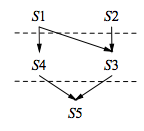
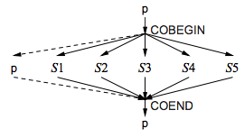
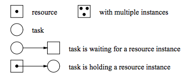

Control Flow
- Control Flow
is the order or flow in which individual statements are executed evaluated in a program.
- Multi-Exit Loops
have at least one break in the middle, not just in the end.
for (;;) {
cin >> d;
if (cin.fail()) break;
...
}
- Flag Variables
are used to explicitly implement control flow.
bool flag1 = false;
while (!flag1) {
cin >> d;
if (cin.fail()) flag1 = true;
else {
...
}
}
They are the variable equivalent to a goto, since they can be set, reset, and tested at arbitrary locations in a program.
- Static Multi-Level Exit
occurs when the program exits (returns or gotos) at multiple levels which are known exit points are known at compile-time.
L1 : {
C1
L2: switch ( ... ) {
L3: while (true) {
... break L1;
... break L2;
... break L3;
}
}
}
We can use multi-level exit to remove flag variables and to remove duplicate code.
- goto
goes to a line.
Only use goto to perform static multi-level exit (i.e. to simulate a labeled break and continue).
Exceptions
Dynamic Multi-Level Exit
We can extract code to create new methods (called modularization), but this doesn’t work with labels since labels have only routine scope.
// To illustrate the note, this will not compile.
void rtn ( ... ) {
B2: for ( ... ) {
if ( ... ) break B1;
}
}
B1: for ( ... ) {
rtn ( ... );
}
- Dynamic Multi-Level Exit
allows us to extend call and return semantics to go in the reverse direction, so given  calls
calls  calls
calls  , we can transfer from back to , skipping .
, we can transfer from back to , skipping .
- Non-Local Transfer
allows a routine to return from , skip and go directly to . It’s a generalization of the multi-exit loop and multi-level exit. We can accomplish this using a label variable.
label L;
void a (int i) {
if ( ... ) goto L;
}
void b (int i ) {
// L1 is a label.
L1: L = L1;
}
void c (int i ) {
// L2 is a label.
L2: L = L1;
}
We go directly to the stack position that corresponds to the label, then change the PC to go to the label (transfer point) in the routine.
Since it can be set dynamically, control flow can’t always be statically determined. Similar to gotos, we can break the stack really easily using labels.
In C, jmp_buf declares a label variable, setjmp initializes a label variable, and longjmp goes to a label variable.
Traditional Approaches
Without non-local transfer, we have a few options:
- return codes
are special values returned that signal the caller to perform “special” control flow logic.
This mixes exceptions with normal return values and makes code difficult to read. Additionally, it’s easy to “not expect” these directives as output.
- status flags
are values in shared global status flag being modified.
This can be delayed or overwritten by concurrent threads.
- fix-up routines
are global or local routines called for an exception event to handle errors.
This increases the number of parameters, this increases the cost of each call when they’re not used.
Exception Handling
Exceptional events are events that occur at low frequency, and are ancillary to an algorithm.
Exception handling mechanisms (ehm) actively force programmers to work with exceptions, which allows programs to become more robust.
Execution Environment
How exception handling mechanisms are implemented depends on the environment they’re placed in.
The finally clause in Java and other languages exists to allow cleanup and deallocation code. This makes it hard to unwind the stack, because it sometimes needs to drop back into “finally world” before continuing propagating the error thrown.
Given multiple stacks, exception handling becomes incredibly sophisticated - can exceptions be propagated between stacks?
Terminology
- execution
is a language unit where exceptions can be raised.
- execution type
is the type of an execution.
- exception
is an instance of an exception type.
- raise (throw)
is the operation that causes an exception.
- propagation
directs control flow from a raise in the source to a handler.
- propagation mechanism
is the mechanism (or rules) used to locate the handler for a thrown exception.
Most mechanisms give precedence to handlers most recently created in the call stack.
- handler
is a nested code block responsible for handling a raised exception. It can handle by either returning, re-raising the same exception, or by raising a new exception.
- guarded block
is a language block with associated handlers (i.e. a try-catch-block).
- unguarded block
is a language block with no associated handlers.
- termination
is when control cannot return to where it was raised and the stack is unwound.
- resumption
is when control flow can return to the raise point.
- stack unwinding
is when all blocks on the faulting stack from the raise block to the guarded block are terminated, and destructors of objects are called.
- EHM
refers to the overall Exception Handling Mechanism. It refers to the 4-tuple of: Exception Type + Raise + Propagation + Handlers + Exception Instance.
Control Flow Types
Routine and exceptional control-flow can be characterized by two properties:
Static/Dynamic call: routine/exception being called is looked up statically or dynamically
Static/Dynamic return: after a routine or handler completes, it returns to its static or dynamic context (definition or caller).
We can tabulate this as the following:
[h] [tbl:control-flow]
r || c | c & static call/raise & dynamic call/raise
static return & sequel & termination exception
dynamic return & routine & routine-pointer, virtual-routine, resumption
Static Propagation (Sequel)
Sequels are routines with no return value that code continues at the end of the block where the sequel is declared.
void foo() {
int i = 0;
{
sequel S1( ... ) { printf("one"); i++; }
{
sequel S2( ... ) { printf("two"); i++; }
} // S2 returns to here.
printf ("foo");
} // S1 returns to here.
printf ("bar")
if (i == 0) {
S1();
} else if (i == 1) {
S2();
}
}
/*
* prints:
* foo
* bar
* one
* bar
* two
* foo
* bar
*/
An advantage is that the handler is statically known, so it is super-duper efficient. A disadvantage is that sequels only work for monolithic programs because it must be statically nested where it is used (no re-use of “generic” sequels). This also prevents code from being separately compiled.
Dynamic Propagation
Both termination and resumption have dynamic raise; this works for separately-compiled programs, but is slower at runtime (lookup is not known statically).
Termination
Termination allows us to pass control from the start of propagation to a handler, then returns to a predefined position.
Three different basic termination forms for non-recoverable operations:
nonlocal - general mechanism for block transfer on the call stack, but has a goto problem.
terminate - limited mechanism for block transfer on the call stack.
label L;
void f ( ... ) {
...
goto L;
}
int main() {
L = L1;
f (...);
L1:
S1: L = L2;
f (...);
L2:
S2: ;
}
retry - combination of termination with special handler semantics
char readfiles( char *files[], int N) {
int i = 0, value;
ifstream infile;
infile.open( files[i] );
while (true) {
try {
... infile >> value ...;
} retry (Eof) {
i += 1;
infile.close();
if (i == N) goto Finished;
... infile.open( files[i] ) ...; // try again.
}
}
: Finished;
}
Since this is easily simulated, it’s not usually supported directly.
Exception handlers can generate an arbitrary number of exceptions, and so can destructors.
Destructors that throw errors during propagation cause the program to terminate:
struct E {}
struct C {
~C() { throw E(); }
}
try {
C x;
throw E(); // Program terminates
} catch ( E ) { ... }
This is generally because we cannot start the second exception without a handler to deal with the first exception, the first one is left hanging.
Resumption
In resumption, control transfers to a handler, and dynamically returned.
_Event E {}; // uC++ exception label
void f() {
_Resume E();
cout << "control returns here" << endl;
}
void uMain::main() {
try {
f();
} CatchResume ( E ) { cout << "handler 1" << endl; }
try {
f();
} CatchResume ( E ) { cout << "handler 2" << endl; }
}
/*
* output:
* handler1
* control returns here
* handler2
* control returns here
*/
Implementation
To implement termination and resumption, the raise needs to know the last guarded block with a handler for the raised exception type.
One approach is to associate a label variable with each exception type, re-setting the label variable whenever you enter and exit guarded blocks. This is millions of operations.
For termination, it is necessary to unwind the stack due to activations that contain objects with destructors and finalizers; we linearly unwind the stack this way.
If we assume there are very few exceptions compared to try entries and exits, we should choose to unwind the stack when implementing this for ourselves.
Exceptional Control-Flow
In this section we give an example of what control flow looks like for the following snippet
{
try {
try {
try {
{
try {
throw E5();
} catch ( E7 ) {
...
} catch ( E8 ) {
...
} catch ( E9 ) {
...
}
}
} catch ( E4 ) {
...
} catch ( E5 ) {
...
} catch ( E6 ) {
...
}
} catch ( E3 ) {
...
}
} catch ( E5 ) {
... resume/retry/terminate ... // where do these go?
} catch ( E2 ) {
...
}
Additional Features
Derived Exception Type
derived exception types is a word for inherited exception types which allows us to catch exceptions with different levels of specificity. Exception type inheritance allows the handlers to match multiple exceptions.
When subclassing, it is best catch an exception by reference, because the exception will be truncated otherwise.
struct B {};
struct D : public B {};
try {
throw D();
} catch (B & e) {
... dynamic_cast<D>(e); ...
}
Catch-Any
Catch-any is a mechanism to match anything, so we can finalize and deallocate variables.
In java, this is a simple “finally” block, or mimed within an catch (Exception) block.
Exception Parameters
Exception parameters allow passing information from the raiser to a handler, usually in ivars of the exception object.
Exception List
Exception List is a part of a routine’s prototype that specifies about what types of exceptions can be thrown by the routine by its caller. This helps detect static detection of invalid exceptions, and runtime detection of where the exception can be converted into a special failure exception.
Coroutine
A Coroutine is a routine that can suspend at some point, and be resumed from that point when control returns. Think of it as a routine which uses pauses to hold state, and continues from the same point.
[t]1
In exams and assignments, coroutines containing any state usually receive zero marks.
The state of a coroutine is a 3-tuple:
- Execution location
which is the  starting at the beginning, and remembered at each suspend.
starting at the beginning, and remembered at each suspend.
- Execution state
which is the stack for that coroutine
- Execution status
is a flag indicating if the coroutine is active, inactive, or terminated.
There are two different types of coroutines:
- Semi-Coroutines
have the ability to return execution to the caller, or call sub-routines.
- Full-Coroutines
have the ability to pass execution to any other coroutine.
Internally, the implementation of both types of coroutines in  C++are the same, but how we use them is different.
C++are the same, but how we use them is different.
Coroutine Structure in C++
There is a C++extension _Coroutine class that looks like the following:
_Coroutine Fibonacci {
int fn;
void main() {
int fn1, fn2;
fn = 0; fn1 = fn;
suspend();
fn = 1; fn2 = fn1; fn1 = fn;
suspend();
while (true) {
fn = fn1 + fn2;
fn2 = fn1;
fn1 = fn;
suspend();
}
}
public:
int next() {
resume();
return fn;
}
}
There’s no execution state, and a main method that is suspended & resumed. Each instance of a coroutine has its own stack.
On initialization, main is executed until the first suspend call. Subsequent resume calls continue from the previous suspend call.
We can recursive functionality of coroutines to write simple iterators.
Coroutine Construction
The simplest way to write a coroutine is to write a standalone program, and convert it to a coroutine.
We can convert a normal program to a coroutine by:
Putting processing code into the main
Converting reads and writes to suspend calls.
Use interface members and variables to transfer data to & from the coroutine.
Full-Coroutines
Semi-coroutines activate the member routine that activated it. Full-coroutines activate (and re-activate) any other coroutine.
The method resume activates the current coroutine (uThisCoroutine), and suspend activates the last resumer. In other words, we can call B->resume from the execution stack of A->resume, and control passes to coroutine B from A.
To have references from A to B and vice versa, we can pass in pointers, or creating a setter for the ivar in the one instantiated first.
When terminating a coroutine, execution control returns to its creator.
Coroutine Implementation
We can implement coroutines using either the callers stack (stackless), or creating a separate stack (stackful). Stackless coroutines can only suspend to the main coroutine.
Python
Python implements the yield keyword that allows coroutines to return values, but not to pass control to other coroutines. It thus has no full coroutine implementation.
Concurrency
- Threads
schedule execution separately and independently from other threads.
- Processes
are program components that have at least one thread, and has the same state information as a coroutine.
- Tasks
are similar to processes, except it shares memory with other tasks. Tasks are sometimes called light-weight processes (LWP).
- Parallel Execution
is when 2 or more operations occur simultaneously, which only occurs with multiple CPUs.
- Concurrent Execution
is any situation where parallel execution appears to happen.
Why Concurrency
By dividing work between multiple threads, we can capitalize on resources available to us to decrease the time it takes to execute our program.
Why Concurrency is Hard
People can do a small number of things concurrently, but fail at large numbers of things, and even more when they interact with each other.
We need to be able to determine how and why to break up a problem into parts, decide how they react, and how reactions occur.
We finally need to reason about and debug multiple execution paths that execute in a non-deterministic order.
Concurrent Hardware
All types of concurrency is trivially possible for a single processor (uniprocessor). We only need to context and switch threads on the CPU, and use pointers to share memory between tasks to have concurrent problems in uniprocessor systems. The bigger issue is that every computer has multiple CPUs these days.
In multiprocessor systems, we can still share memory using pointers. In distributed systems, pointers don’t point to the same things, so we’re pretty much screwed in that case.
Execution States
A thread can be in any of the states {new, ready, running, blocked, halted }, which are switched between in response to events.
Since events are non-deterministic, basic operations (such as increment) are unsafe.
Threading Model
- Threading Model
defines the relationship between CPUs and threads in a system.
- Kernel Threads
are provided by the OS to manage CPUs. Kernel threads are scheduled across the CPUs.
Having more kernel threads than CPUs allows the OS to provide multiprocessing. A process may have multiple kernel threads to provide parallelism. User threads are a low-cost structuring mechanism.
This relationship between user threads, kernel threads, and CPUs can be compared as the following:
- Kernel Threading
1:1:C - 1 user thread maps to 1 kernel thread
- Generalized Kernel Threading
M:M:C -  user threads map to kernel threads .
user threads map to kernel threads .
- User Threading
N:1:C -  user threads map to 1 kernel thread.
user threads map to 1 kernel thread.
- User Threading
N:M:C - user threads map to kernel threads.
Often, we omit the number of CPUs in our ratio. We can even add nano threads on top of user threads, and virtual machines under the OS.
Concurrent Systems
Concurrent systems can be split into 3 major types:
Systems that attempt to discover concurrency - there is a limit to how much can be discovered.
Systems that provide concurrency through implicit constructs - concurrency is built using specialized mechanisms
Systems that provide concurrency through explicit constructs - concurrency is explicitly managed
In fact, both of these are complementary, and can be built into the same system. C++has only explict mechanisms. Some systems only have a single technique, but this is limited and awkward; when it comes to concurrency controls, more is better.
Speedup (Amdahl’s Law)
Program speedup can be denoted  , where is the number of CPUs, and
, where is the number of CPUs, and  is the time taken for sequential execution.
is the time taken for sequential execution.
 + \frac{P}{C}}
\end{aligned}")
Where  is the proportion of a progam that can be made parallel, and is the degree of concurrency.
is the proportion of a progam that can be made parallel, and is the degree of concurrency.
As we take  , we get the maximum speedup:
, we get the maximum speedup:

Sample Question
This is a sample question from the W12 Midterm:
Question: A program has 4 sequential stages, where each stage takes the following units of time to execute:  ,
,  ,
,  ,
,  . Stages
. Stages  and
and  are modified is increase their speed (i.e, reduce the time to execute)by
are modified is increase their speed (i.e, reduce the time to execute)by  and
and  times, respectively. Show the steps in computing the total speedup for the program after the modification.
times, respectively. Show the steps in computing the total speedup for the program after the modification.
Solution: We can calculate the speedup  as the sequential speed over the concurrent speed
as the sequential speed over the concurrent speed  :
:

Thus the overall speedup is by  times.
times.
Thread Creation
We need the following 3 things to adequately specify concurrency:
Thread creation
Synchronization between threads
Communication between threads
In C++, we use _Tasks to emulate a cobegin segment.
The slowest path through all tasks synchronizing is called the critical path.
C++_Tasks
Tasks are threads in C++. Calling the destructor causes the current thread to wait until the task completes execution.
_Task T1 {
void main() {}
}
_Task T2 {
void main() { int temp = 1; }
}
void uMain::main() {
T1 *t1 = new T1; // start execution of T1 from its main.
...
T2 *t2 = new T2; // start execution of T2 from its main.
...
delete t1; // wait for T1 to complete
...
delete t2; // wait for T2 to complete
}
This structure allows us to “kick off” the same _Task multiple times with different arguments.
Termination Synchronization
A thread finishes when
We may trigger/react to termination to implement functionality.
Divide and Conquer
We use divide-and-conquer to take advantage of work that can be done individually then merged. Using divide and conquer, work done individually should look the same.
Task creation order doesn’t matter, but deletion order may, depending on the critical path through the tasks.
Synchronization and Communication During Execution
Synchronization happens when one thread happens when one thread waits for another to execute until a certain point. This is useful for threads waiting to transfer information from one thread to another.
One way to do this is using a busy wait, which is bad.
Communication
After synchronization, threads can transfer information many ways. In the same memory, the information can be transfered by value or address. In different memories, transferring information by value is easiest.
Critical Section
Threads may want to modify shared resources (such as a linked list). Multiple threads operating on the same object is problematic. While this is not a problem while operations are atomic, so we need to find a way to do this for our code.
We call area inside an atomic operation the critical section, and the act of preventing simultaneous execution mutual exclusion.
We can serialize all access, but this fails when there are many readers.
Static Variables
Static variables are shared between all objects of that class, and may need mutual exclusion.
The only exception for this is in task constructors, which are naturally mutually exclusive in C++. It’s highly suggested not to use static variables in a concurrent program.
Mutual Exclusion
Mutual exclusion requires that all the following clauses are true.
Only one thread can be in a critical section at a time
The underlying system guarantees all threads get some CPU time.
Threads not in critical sections should not prevent threads from executing critical sections.
We should always return to select a thread to enter a critical section.
The number of threads allowed to enter a critical section after a given thread requests to enter it should be capped, so there is no starvation going on.
Self-Testing Critical Section
We can create self-testing critical sections by setting critical sections that abort if another thread is currently messing up our stuff:
void criticalSection () {
::CurrTid = &uThisTask();
for (int i=1; i<100; i++) {
if (::CurrTid != &uThisTask()) {
uAbort("interference");
}
}
}
Software Solutions
Software Solutions to this problem must solve the problems presented in the list above.
Lock
Locks have a status flag that indicates if a thread is in a critical section:
foo() {
while (lock == CLOSED) {}
lock = CLOSED;
criticalSection();
lock = OPEN;
}
This strategy breaks rule 1.
Alternation
The alternation strategy is one where a thread will go only if it is not the last one to progress through:
foo() {
while (last == me) {}
criticalSection();
last = me;
}
This strategy breaks rule 3.
Declaration of Intent
The declaration of intent strategy is one where threads politely wait until no others want to enter.
foo() {
me = WANT_IN;
while (you == WANT_IN) {}
criticalSection();
me = DONT_WANT_IN;
}
This strategy breaks rule 4.
Retract Intent
The retraction of intent strategy is one where threads politely submit & resubmit requests to execute the critical section.
foo() {
while (true) {
me = WANT_IN;
if (you == DONT_WANT_IN) break;
me = DONT_WANT_IN;
while (you == WANT_IN) {}
}
criticalSection();
me = DONT_WANT_IN;
}
This strategy breaks rule 4.
Prioritized Entry
From subsection [sub:retractintent], we can add the ability to be a high priority thread:
foo() {
if (this.priority == HIGH) {
me = WANT_IN;
while (you == WANT_IN) {}
} else {
while (true) {
me = WANT_IN;
if (you == DONT_WANT_IN) break;
me = DONT_WANT_IN;
while (you == DONT_WANT_IN) {}
}
}
}
This strategy breaks rule 5.
Dekker
The Dekker algorithm doesn’t break any rules. It uses a mixture of declared intention and alternation to achieve its goals:
foo() {
while (true) {
me = WANT_IN;
if (you == DONT_WANT_IN) break;
if (last == &me) {
me = DONT_WANT_IN;
while (last == &me) {} // wait for last == somebody else.
}
}
}
This strategy makes no assumptions about atomicity, and works on a machine where bits are scrambled during simultaneous assignment.
Peterson
The Peterson algorithm doesn’t break any rules. It uses a pointer to the last requester, and checks that no others want to go into the critical section:
foo() {
while (true) {
me = WANT_IN;
last = &me;
while (last == me && you == WANT_IN) {} //spin
criticalSection();
me = DONT_WANT_IN;
}
}
While this doesn’t break any rules, it assumes atomicity in assignment, and fails when bits are scrambled during simultaneous assignment.
 -Thread Prioritized Entry
-Thread Prioritized Entry
In a case where threads want to enter a critical section, we modify the Peterson algorithm to use an array for priorities: We wait for all intents that are more important than us, then wait for all less-important coroutines to complete.
foo() {
// step 1: wait for intents with higher priority to run:
do {
intents[priority] = WANT_IN;
for (j = priority -1; j>= 0; --j) {
if (intents[i] == WANT_IN) {
intents[priority] = DONT_WANT_IN;
while (intents[i] == WANT_IN) {} // spin
break;
}
}
} while (intents[priority] == DONT_WANT_IN);
// step 2: wait for intents with lower priority to complete:
for (j = priority+1; j<N; j++) {
while (intents[j] == WANT_IN) {} //spin
}
criticalSection();
intents[priority] = DONT_WANT_IN;
}
This strategy breaks rule 5. There are no algorithms that use only bits, are deterministically (non-probabilistically) correct, and assume atomic assignment.
-Thread Bakery (Tickets)
In this implementation, we find the maximum value as “ticket number” in the array, and set our value to that. We then wait until we have the lowest ticket number in the array. In the case that multiple values are found in the array with the same ticket number, we also ensure we are the lowest priority with that value.
foo() {
ticket[priority] = 0;
int max = 0;
for (int j = 0; j< n; j++) {
int v = ticket[j];
if (v != INT_MAX && max < v) max = v;
}
max += 1;
ticket[priority] = max;
for (int j = 0; j < n; j++) {
while (ticket[j] < max || (ticket[j] == max && j < priority)) {} // spin
}
criticalSection();
ticket[priority] = INT_MAX;
}
Since tickets cannot increase indefinitely, this is probabilistically correct. This also takes  bits (
bits ( for an int, for example).
for an int, for example).
-Thread Peterson
This modification of the Peterson algorithm uses a round-based race section to find the “loser”.
foo() {
for (int i = 1; i<N; i++) {
intents[myId] == i; //current round
turns[i] = myId; // MULTI-WAY RACE ALLCAPS
L: for (int k=1; k<=n; k++) {
if (k != myId && intents[k] >= i && turns[i] == myId) goto L;
}
}
criticalSection();
intents[myId] = 0;
}
There are  rounds, and each round has a loser, which implies that
rounds, and each round has a loser, which implies that  winners are promoted. This can be implemented in only
winners are promoted. This can be implemented in only  bits, but assumes atomic assignments.
bits, but assumes atomic assignments.
Tournament (Taubenfeld-Buhr)
TODO: Determine how this works. TODO: High-Priority: Determine how this works. Explaining this strategy was on the F13 midterm and the W13 final.
Arbiter
We can always create an arbiter task that controls entry to the critical section.
client () {
intent[me] = true;
while (!serving[me]) {} //spin
criticalSection();
intent[me] = false;
while (serving[me]) {} // wait for the arbiter to unblock me.
}
arbiter () {
while (true) {
for (; intent[i]; i = (i+1)%5) {} // busy wait
serving[i] = true;
while (intent[i] = true) {} // busy wait
serving[i] = false;
}
}
This implements mutual exclusion between the arbiter and each waiting client.
Hardware Solutions
Software solutions are limited by relying only on shared information between threads. Hardware solutions introduce a level below the software level, which allow us to make assumptions about execution (mainly atomicity). This only works on a single CPU - distributed programs don’t have this hardware benefit.
We use hardware instructions to get great operations that are able to observe values while modifying them.
Test/Set Instruction
The test/set instruction just does that. It returns the old value while setting the value to the new value:
testSet(type newValue, type* lock) {
ret = lock;
lock = newValue;
return ret;
}
foo() {
while (testSet(CLOSED, lock) == CLOSED) {}
criticalSection();
lock = OPEN;
}
In a multi-CPU computer, somewhere in hardware must guarantee multiple CPUs produce consistent output for this instruction.
Swap Instruction
The swap instruction performs a swap of two values:
swap(type& a, type& lock) {
int temp;
temp = a;
a = lock;
lock = temp;
}
foo() {
dummy = CLOSED;
do {
swap(dummy, lock);
} while (dummy == CLOSED);
criticalSection();
lock = OPEN;
}
Compare/Assign Instruction
The compare and assign (caa) instruction does assignment only if the two values being compared are equal.
bool caa(type& value, type comp, type newValue) {
if (value == comp) {
val = newValue;
return true;
}
return false;
}
foo() {
while (!caa(lock, OPEN, CLOSED)) {}
lock = OPEN;
}
Mellor-Crummey and Scott (MCS)
MCS provides a service bound by linking waiting threads on a queue and servicing queue in FIFO.
struct MCS::Node {
size_t waiting;
Node *next;
}
MCS::acquire(Node &n) {
Node *pred;
n.next = NULL;
pred = fetchStore(&last, &n); // pred = last, last = n
if (pred != NULL) {
n.waiting = true;
pred->next = &n;
while (n.waiting) {} // spin
}
}
MCS::release(Node &n) {
if (n.next == NULL) {
if (caa(&last, &n, NULL)) return; // the last is NULL, so nobody is waiting.
while (n.next == NULL) {};
}
n.next->waiting = false; // start the next node.
}
foo() {
MCS::Node n;
Lock.acquire(n);
criticalSection();
Lock.release(n);
}
Lock Abstraction
To build synchronization or mutual exclusion mechanisms, we build locks.
Lock Ontology
There are a bunch of different types of lock:
- Spinning Locks
busy wait until an event occurs. In uniprocessor systems, this lock can explicitly terminate its time slice by calling yield. In multiprocessor systems, it’s better to begin yielding after event checks fail.
- Blocking (Queueing) Locks
do not busy wait, but are unblocked by a mechanism until an event occurs.
Spin Lock
Spin locks are implemented using busy waiting, which loops checking for an event:
while (testSet(lock) == CLOSED); // spin
This is slow, since it loops until someone else opens the lock, or until it is pre-empted (i.e. when its time-slice ends). We can increase efficiency by yielding after the checking fails:
while (testSet(lock) == CLOSED) uThisTask().yield();
Even better, adaptive spin-locks modify the number of times that they fail before they yield.
Implementation
C++provides the non-yielding spin lock uSpinLock and a yielding spin lock uLock:
class uSpinLock {
public:
uSpinLock(); // initializes to open
void acquire();
void tryacquire();
void release();
}
class uLock {
public:
uLock( unsigned int value = 1);
void acquire();
bool tryacquire();
void release();
}
Starvation can theoretically occur, but it’s rarely a problem.
Since uSpinLock is non-preemptive, no other tasks may execute on that processor once the lock is acquired. The uLock provided is non-preemptive and so can be used for both synchronization and mutual exclusion.
The method tryacquire makes one attempt, but does not wait.
There is no problem with calling release extra times. In fact, release can be used to signal availability.
Blocking Locks
Blocking locks only make one check for openness before blocking. The releaser only needs to detect the blocked thread and transferring the lock.
In general, all blocking locks have:
State to facilitate lock semantics
A list of blocked acquirers
A spin lock to protect list access and state modification
Synchronization Lock
The sync lock is used solely to block tasks waiting to be synchronized, and it only has the ability to block.
The acquiring task always blocks, and releases are lost when there is no waiting task.
Often, these are called condition locks.
Implementation
There are two types of synchronization locks:
- External Locking
uses external locks to protect task lists
- Internal Locking
uses internal locks to protect task lists
For both implementations, we need to use a binary semaphore to modify or read the task list.
For external implementations, we need to acquire the right to modify the list beforehand. Since we block after modifying the list, we need to release the modification right inside the acquire method:
uSpinLock* m = ...;
foo() {
m.acquire();
syncLock.acquire(m);
}
acquire(uSpinLock & m) {
// add to list
m.release();
// Point A
// yield and block
}
This is so awkward, and can still be interrupted at point .
uCondLock
C++provides an internal synchronization lock, uCondLock.
class uCondLock {
public:
uCondLock();
/**
* Returns false if there are tasks blocked on the queue and true otherwise.
*/
bool empty();
/**
* Used to block a task from the queue of a condition.
* This is a blocking call, and re-acquires its argument owner-lock before returning.
*/
void wait(uOwnerLock &lock);
/**
* Used to un-block a task from the queue of a condition.
* Tasks are blocked in FIFO order.
*/
void signal();
/**
* Un-blocks all tasks.
*/
void broadcast();
}
Binary Semaphore
Dijkstra invented the binary semaphore as a blocking equivalent of a yielding spin-lock.
This provides synchronization and mutual exclusion, since it remembers state about an event.
The man who invented this concept is dutch, and so are the names for acquire and release:
- Prolagen (P)
is the acquire method. It is called prior the critical section.
- Verlagen (V)
is the release method.
Semaphores with only two states (open/closed) are called binary semaphores.
Implementation
The implementation is really just a 3-tuple of:
C++does not provide a binary semaphore, since all binary semaphores are really just counting semaphores that only count up to 1.
BinSem::P() {
lock.acquire();
if (closed == true) {
// add to blocked list
// yield, block, and release lock
lock.acquire(); // re-acquire the lock.
}
closed = true;
lock.release();
}
BinSem::V() {
lock.acquire();
if (blocked.isEmpty()) {
closed = false;
} else {
// remove from blocked list, and make it ready.
}
lock.release();
}
Mutex Lock
Restricting a lock to only performing mutual exclusion allows us to separate lock usage between synchronization and mutual exclusion while allowing us to optimize based on the singular function of the lock.
Mutex locks are divided into two types:
- Single Acquisition
locks are ones that can only be acquired by the lock owner once (recursively).
- Multiple Acquisition
locks are ones that can be acquired by the lock any number multiple times.
Implementation
The easiest implementation is just to add an owner state to a binary semaphore. Some other implementations put the owner at the front of the queue, but this is messier.
uOwnerLock
C++provides a multiple-acquisition mutex-lock, uOwnerLock.
class uOwnerLock {
public:
uOwnerLock();
/**
* Returns NULL if there is no owner.
*/
uBaseTask *owner();
/**
* Returns the number of times the lock has been acquired by the owner.
*/
unsigned int times();
/**
* Refer to uLock.acquire();
*/
void acquire();
/**
* Refer to uLock.tryacquire();
*/
bool tryacquire();
/**
* Refer to uLock.release();
*/
void release();
}
Stream Locks
C++offers a special mutex for I/O based on uOwnerLock named osacquire and isacquire for output and input streams respectively.
The two are classes that acquire the object at the beginning of their lives (constructor), and release the object at the end of their lives (destructor).
Counting Semaphore
By changing the boolean in the binary semaphore to an integer that represents the number of remaining “events”, we can:
Implementation
We can implement thins by changing the flag into a counter and setting it to the maximum on creation. Then we’d decrement on acquisition, and increment it on release:
CntSem::P() {
lock.acquire();
--cnt;
if (cnt < 0) {
// add self to lock's blocked list
// magically yield, block, and release lock.
lock.acquire();
}
lock.release();
}
CntSem::V() {
lock.acquire();
++cnt;
if (cnt <= 0) {
// remove task from blocked list and make ready
}
lock.release();
}
uSemaphore
C++provides a counting semaphore named uSemaphore which offers more than just a binary semaphore:
class uSemaphore {
public:
uSemaphore(unsigned int counter = 1);
/**
* Decrements the semaphore counter.
* If the semaphore counter is >= 0 the caller continues, otherwise it blocks.
*/
void P();
/**
* TryP returns true if the semaphore has been acquired and false otherwise (it basically is P without blocking)
*/
bool tryP();
/**
* Wakes up the task blocked for the longest time if there are tasks blocked on the semaphore.
* [times is the number of tasks woken up]
*/
void V(unsigned int times = 1);
/**
* Returns the value of the semaphore counter:
* n<=0 means abs(n) tasks are blocked and the semaphore is locked
* n>0 means that there are n tasks that are allowed to acquire the semaphore, and it is unlocked.
*/
int counter() const;
/**
* Returns false if there are threads blocked on the semaphore (and true otherwise).
*/
bool empty() const;
}
Barrier
A barrier coordinates a group of tasks performing a concurrent operation surrounded by sequential operations. Thus, it is only for synchronization and not mutual exclusion.
Barriers are initialized to , the number of tasks they will hold before allowing them to continue.
Tasks call block. The th task will allow all tasks to continue.
These can only be used for mutual exclusion.
uBarrier
C++barriers are thread-safe coroutines where the main can be resumed by the final task arriving at the barrier.
_Cormonitor uBarrier {
protected:
void main { for (;;) { suspend(); } }
public:
uBarrier( unsigned int total );
/**
* returns the number of tasks being synchronized
*/
unsigned int total() const;
/**
* returns the number of currently waiting tasks
*/
unsigned int waiters() const;
/**
* resets the number of tasks synchronizing to to 'total'
*/
void reset( unsigned int total );
/**
* Wait for the nth thread. The nth thread unblocks and calls the last.
*/
virtual void block();
/**
* This is implicitly called by the last task to arrive to the barrier.
*/
virtual void last() { resume (); }
}
We can create a barrier by inheriting uBarrier, and redefining main and possibly the block method. We may even want to initialize main from a constructor. Here’s an example of us creating a barrier:
_Cormonitor Accumulator : public uBarrier {
int total_;
uBaseTask* nth_;
void main() {
nth = &uThisTask();
suspend();
}
public:
Accumulator( int rows ) : uBarrier ( rows ), total_(0), nth_(0) {}
void block( int subtotal ) {total += subtotal; uBarrier::block(); }
int total() { return total_; }
uBaseTask* nth() { return nth_; }
}
_Task Adder {
int *row, size;
Accumulator &acc;
void main() {
int subtotal = 0;
for (unsigned int r = 0; r<size; r++) subtotal += row[r];
acc.block(subtotal);
}
public:
Adder (int row[], int size, Accumulator &acc) :
size( size ), row( row ), acc( acc ) {}
}
Lock Programming
Synchronization Locks
Synchronization locks are weak, since we need to provide external mutual exclusion because they are weak.
Precedence Graph
P and V in conjunction with cobegin are as powerful as the start and wait commands.
Given a list of statements where the result is compounded in some parts, we can use the graph to analyze which code and data depend on each other:
S1: a := 1
S2: b := 1
S3: c := a + b
S4: d := 2 * a
S5: e := c + d
By analyzing what data and code depends on each other, we can create a graph of dependencies, as seen in Figure [fig:precedencegraph].
[fig:precedencegraph] 
We can equivalently express this initial code using a bunch of semaphores:
Semaphore L1(0), L2(0), L3(0), L4(0)
COBEGIN
BEGIN a:= 1; v(L1); END;
BEGIN b:= 2; v(L2); END;
BEGIN P(L1); P(L2); c :=a + b; v(L3); END;
BEGIN P(L1); d := 2 * a; v(L4); END;
BEGIN P(L3); P(L4); e := c + d; END;
COEND
Similarly, we can create a process graph as seen in Figure [fig:processgraph].
[fig:processgraph] 
Buffering
In most cases, tasks communicate in a single direction using a queue, where producers push to the queue, and consumers pop from the queue.
Unbounded Buffer
Two tasks will communicate through a queue of unbounded length. The producer may work faster than the consumer, but this is ok since the buffer is infinite length. Consumers need to wait for producers to add if they work faster than the producer.
#define QueueSize infinity
int front = back = 0;
int Elements[QueueSize];
uSemaphore signal(0);
void Producer::main() {
while (true) {
// append to queue
signal.V();
}
queue.append(END_SIGNAL);
}
void Consumer::main() {
while (true) {
signal.P();
value = queue.pop();
if (value == END_SIGNAL) break;
// use the value
}
}
This is an instance where a semaphore is used for synchronization.
The problem with unbounded buffers is that they take infinite memory.
Bounded Buffer
Because the queue is like bounded, producers need to wait if the buffer is full.
We’re going to use two counting semaphores for the finite length of the shared queue:
uSemaphore full(0), empty(QueueSize);
void Producer::main() {
for (...) {
item = ...
empty.P(); // Reserve a space in the queue to append our value.
queue.append(item);
full.V(); // Indicate that there is a takeable item in the queue
}
}
void Consumer::main() {
for (...) {
full.P(); // reserve the right to take a value
x = queue.pop();
empty.V(); // increase the number of values remaining
...
}
}
This produces decent concurrency, but definitely not maximum concurrency. This also allows multiple producers and multiple consumers.
Lock Techniques
We want to implement a split binary semaphore - a collection of semaphores which at most one has the value 1.
We use a technique named baton passing which passes a (conceptual) baton between different tasks that wait on it. The baton is acquired in entry and exit protocol, and is passed from signaller to signalled task.
class BinSem {
queue<Task> blocked;
bool inUse;
SpinLock lock;
public:
BinSem( bool usage = false ) : inUse( usage ) {}
void P() {
lock.acquire(); // Pick up baton. Now we are 'allowed' to access state.
if ( inUse ) {
// add self to lock's blocked list
// yield, block and release lock at the same time
// When unblocked:
// We've been passed the baton. Now we can access state.
}
inUse = true;
lock.release();
}
void V() {
lock.acquire(); // Pick up the baton. Now we are 'allowed' to access state.
if (!blocked.isEmpty()) {
// remove the task from the blocked list and make it ready.
// At this point, we've passed the baton, and cannot access state
} else {
inUse = false;
lock.release();
}
}
}
Readers and Writer Problem
When there are multiple tasks that share reading and writing to a resource, we want to ensure that we are able to allow multiple concurrent readers while serializing access for writer tasks (writers may read as part of their write process).
We’re going to use split binary semaphores to segregate 3 kinds of tasks: arrivers, readers, and writers.
Solutions 1-6
These solutions have various problems. Here is an itemized list:
If we allow the readers to go first, it starves the writers.
If we allow the writers to go first, it starves the readers.
When tasks exit, they should activate the type that isn’t their own. The problem this creates is that due to the way that they can be condensed, readers that arrive after a writer may be reading stale data. We should service readers and writers in temporal order.
When groups arrive, we should concatenate spans readers with no writers in between. The textbook argues that Now we lose kind of waiting task!. I’m unsure of what this means.
If we create a “next up” chair... I don’t really understand this one.
If we create a ticked method (See Sub-Section [sub:nthreadbakerytickets]), we can get readers and writers to take a ticket before releasing the baton. Starvation is not an issue, but this isn’t efficient.
If we had a list of private semaphores... I don’t really understand this one either.
Solution 7
Generally speaking, we want a solution that provides:
Execution in temporal order
A smaller (or simpler) solution
An efficient solution
We are going to create an ad-hoc solution that uses questionable split-binary semaphores and baton-passing.
Tasks wait in temporal order for an entry semaphore. Writers wait on the writer chair until readers leave the resource, holding the baton until all readers leave. Semaphore lock is only used for mutual exclusion.
uSemaphore entry_q(1);
uSemaphore lock(1), writer_q(0);
void Reader::main() {
entry_q.P(); // entry protocol.
lock.P();
r_cnt++;
lock.V();
entry_q.V(); // put the baton down
...
lock.P(); // exit protocol
r_cnt--;
criticalSection();
if (r_cnt == 0 && w_cnt == 1) { // if last reader and there is a writer waiting
lock.V();
writer_q.V(); // pass the baton.
} else {
lock.V();
}
}
void Writer::main() {
entry_q.P(); // entry protocol
lock.P();
if (r_cnt > 0) { // are there readers waiting?
w++;
lock.V();
writer_q.P(); // wait for readers
w_cnt--; // unblock with baton
} else {
lock.V();
}
criticalSection();
entry_q.V();
}
Concurrent Errors
Race Condition
Race conditions occur when we are missing synchronization or mutual exclusion. Two or more tasks race along assuming that synchronization or mutual exclusion has occurred. The easiest way to locate errors is through thought experiments, which are personally taxing.
No Progress
Live-Lock
Live-lock is when there is indefinite postponement. This is essentially caused by poor scheduling in an entry protocol. To fix this, there always is some mechanism to break ties on simultaneous arrival that deals effectively with live-lock.
Starvation
When a selection algorithm ignores  tasks so they are never executed, the tasks are starved.
tasks so they are never executed, the tasks are starved.
While infinite starvation is very rare in real codebases, short-term starvation can occur and is problematic.
Like a live-lock (see Sub-Section [sub:livelock]), this includes situations where the starving task may only really switch between active, ready, and possibly blocked states.
Dead-Lock
Deadlock is a state when  processes are waiting for an event that will never occur.
processes are waiting for an event that will never occur.
Synchronization Deadlock
This occurs when processes are waiting for synchronization that will never occur.
Mutual Exclusion Deadlock
This occurs when processes fail to acquire resources protected by mutual exclusion. There are 5 conditions for mutex-based deadlock to happen:
There exists more than 1 shared resource requiring mutual exclusion.
A process holds a resource while waiting for access to a resource held by another process (hold and wait).
Once a process has gained access to a resource, the runtime system cannot get it back (no preemption).
There exists a circular wait of processes on resources.
These conditions must occur simultaneously.
Deadlock Prevention
We want to eliminate at least one of the conditions required for a deadlock from an algorithm to force deadlock to never occur.
Synchronization Prevention
We can eliminate all synchronization from the program to prevent synchronization-based deadlock. This removes communication, which means that they must generate results through side-effects (ew).
Mutual Exclusion Prevention
We can eliminate deadlock by eliminating any 1 or more of the 5 conditions:
- No mutual exclusion
In many cases, it is impossible to do this while maintaining concurrency.
- No hold and wait
We can implement this by not giving any resources to a process unless all requested resources can be given. This poorly utilizes resources, and introduces the possibility that we may starve a thread.
- Allow Preemption
Since preemption is dynamic, we cannot apply this statically.
- No Circular Wait
We can prevent circular wait from happening by only acquiring resources according to an ordering. Threads can only acquire a resource  if they hold no resources
if they hold no resources  where
where  .
.
- Prevent Simultaneous Occurrence
We can do this by proving that the four previous rules cannot occur at the same time.
Deadlock Avoidance
Unlike deadlock prevention, deadlock avoidance monitors all blocking and allocation and detects the formation of deadlocks. This gives us better resource allocation at the expense of overhead.
[t]1
The difference between Deadlock Prevention and Deadlock Avoidance (Sections [sec:deadlockprevention] and [sec:deadlockavoidance]) has been on past exams.
Banker’s Algorithm
The bankers algorithm is an iterative approach: We require threads  to declare the maximum number of each type of resource that they need to complete execution. Knowing the total available resources, we check that at least one thread is able to complete to execution every time we allocate a resource.
to declare the maximum number of each type of resource that they need to complete execution. Knowing the total available resources, we check that at least one thread is able to complete to execution every time we allocate a resource.
This algorithm works, but it is limited to instances where all threads will declare how much they need prior to execution.
Allocation Graphs
One way to check for potential allocation is by analyzing graphs of resource allocation, as seen in Figure [fig:allocationgraph].
[fig:allocationgraph] 
Once we have our graph, we use reductions from a complicated graph to less complicated but equivalent graphs to locate deadlocks. Cycles existing in our graph indicate that we have a deadlock.
Since detecting cycles is slow, and it needs to be done at every allocation and de-allocation step, this is expensive.
Deadlock Detection and Recovery
The idea is instead of preventing deadlocks from happening, let’s just recover when they do.
We only really have to check for a deadlock when a resource can’t be allocated immediately. Recovery involves preempting processes, and restarting them at their beginning, or at a safe point. This isn’t safe, since the victim may have made changes prior to preemption.
Indirect Communication
P and V are low-level primitives that protect critical sections, and establish synchronization between locks. This can be complicated, and can be incorrectly placed. Split-binary semaphores, and baton passing is hard too. We need higher language-level facilities that give us these things for free.
Critical Regions
Using the pseudocode-like language which we used for cobegin and coend (see SubSection [sub:precedencegraph]):
We can indicate shared variables (i.e. v is protected by the MutexLock named v_lock:
VAR v: SHARED INTEGER MutexLock v_lock;
Access to shared variables is only possible from within a region statement:
REGION v DO v_lock.acquire();
// critical section v++; // etc
END REGION v_lock.release();
As explained in SubSection [ssub:mutualexclusiondeadlock], ordering these region calls can create deadlock.
This implementation prevents simultaneous reads. If we modified it so we can read outside the critical section, we may be reading partially updated information (ew).
Conditional Critical regions
In our make-believe language, we’re going to introduce a condition that must be true inside the mutual exclusion blocks:
REGION v DO
AWAIT conditional-expression
...
END REGION
If conditional-expression is false, the lock is released, and entry is re-started.
Monitor
A monitor is an abstract data type that combines shared data with serializing modification. The key feature offered by a monitor is its differentiating set of mutex members. Of the mutex members, only one may be actively executed at a time. Managing tasks entering and exiting from the mutex is managed automatically by the mutex.
Basically, each monitor has a lock which is Ped on entry to a monitor member, and Ved on exit.
class MonitorDemo {
MutexLock mLock;
int v;
public:
int x() {
mLock.P();
int temp;
try {
...
temp = retVal;
mLock.V();
} catch(Err &e) {
mLock.V();
throw; // re-throw
}
return temp;
}
}
Unhandled exceptions implicitly release the lock so the monitor can continue to function. Recursive entry is allowed. Also, the destructor is blocked by a mutex, so threads can’t be caught inside a monitor.
Scheduling (Synchronization)
A monitor may want to schedule tasks in an order different from the order they arrive.
- External Scheduling
occurs outside the monitor and is accomplished using the accept statement.
- Internal Scheduling
occurs inside the monitor and is accomplished using the condition variables with signal and wait.
External Scheduling
In a nutshell, accept statements block the active task on the acceptor stack and makes a task ready from the specified mutex member queue. Signals move a task from the specified condition to the signaled stack.
We use the C++_Accept statement to control which mutex can accept calls. By preventing members from accepting calls at different times, we can control scheduling of tasks. The _Accept statement defines what cooperation must occur for the accepting task to proceed:
_Monitor BoundedBuffer {
int front, back, count;
int elements[20];
public:
BoundedBuffer() : front(0), back(0), count(0) {}
_Nomutex int query() { return count; }
[_Mutex] void insert( int elem );
[_Mutex] int remove();
};
void BoundedBuffer::insert(int elem) {
if (coint == 20) _Accept( remove );
elements[back] = elem;
back = (back+1) % 20;
count ++;
}
void BoundedBuffer::remove() {
if (count == 0) _Accept( insert );
// waits for insert to be called, then continues.
int elem = elements[front];
front = (front + 1)%20;
count -= 1;
return elem;
}
This implicitly queues tasks that wait outside the monitor for either insert or remove operations. Accepters block until a call to the specified mutex member occurs. When the accepter blocks, it is added to a stack of blocked accepters (across all methods). External scheduling is simple because unblocking (signalling) is implicit.
Internal Scheduling
In a nutshell, implict scheduling occurs when a task waits in or exits from a mutex member, and a new task is selected first from the A/S stack, then the entry queue. Scheduling occurs for tasks inside the monitor, where conditions are used to create a queue of waiting tasks. A task waits by waiting for a uCondition x to be true by calling x.wait(). This atomically puts it at the back of the condition queue, and allows another task into the monitor by releasing the monitor lock.
The uCondition.empty method returns false if there are tasks blocked on the queue. Similarly, the uCondition.front method returns an integer value stored with the task at the front of the condition queue.
A task on a condition queue can be made ready by signaling the condition x.signal(). This readies the task, but it waits until the currently executing task is out of the monitor before continuing. The dual of the signal method, x.block() unblocks the thread and blocks the signaler.
Generally, the entry queue is a fifo list of calling tasks to the monitor.
Readers/Writer
See Subsection [sub:readersandwriterproblem] to see the statement.
We can use monitors to implement solutions to the readers/writer problem much more elegantly than if we were only using the uSemaphore construct. Here is a sample of the final solution proposed, using monitors instead:
_Monitor ReadersWriter {
int rcnt, wcnt;
public:
ReadersWriter() : rcnt(0), wcnt(0) {}
void endRead() {
--rcnt;
}
void endWrite() {
wcnt = 0;
}
void startRead() {
if (wcnt > 0) _Accept( endWrite );
rcnt++;
}
void startWrite() {
if (wcnt > 0) _Accept ( endWrite );
else while ( rcnt > 0 ) _Accept( endRead );
wcnt = 1;
}
}
Condition Signal and Wait vs Counting Semaphore P and V
We’d like to draw the distinction between these different types:
Calling the wait method always blocks, while P only blocks if the semaphore’s value is less than or equal to 0.
Calling a signal is lost, while calling V before P affects the P.
Calling a V may start multiple simultaneous tasks while multiple signals only start one task at a time since they must exit serially through the monitor.
We can simulate V and P through a monitor:
_Monitor semaphore {
int sem;
uCondition semcond;
public:
semaphore(int cnt = 1) : sem (cnt) {}
void P() {
if (sem == 0) semcond.wait();
--sem;
}
void V(int incr = 1) {
sem += incr;
for (int i=0; i<incr; i++) semcond.signal();
}
}
Monitor Types
Through different languages and implementations, there are subtle different ways that monitors can be implemented. These are usually based on their scheduling of the monitor when tasks wait, signal, and exit.
Scheduling is the ordering of priorities for re-entering the mutex by different thread categories:
- C
are the calling threads that haven’t entered the mutex yet.
- W
signalled (waiting) threads are the threads that were blocked then moved to a ready queue.
- S
signaller threads are the ones that have signalled another thread and released control until completion.
To say that C < W < S means that when the mutex is choosing the next thread, it will choose the S threads before W, and before C threads.
Monitors may either implicitly (statement) or explicitly signal (automatic signal). Monitors that implicitly signal may wait on condition variables or an explicit signal statement like waitUntil logicalExpression. Monitors that explicitly signal call methods similar to signal/signalWait.
Additionally, some monitors may be constrained to always return (leave the monitored method) as they signal.
Refer to Table [tbl:useful-control-flow] for ten different types of control flow that are practically useful.
[h] [tbl:useful-control-flow]
| c || l | l | p3cm | Signal Type & Priority & No Priority & notes
Blocking & & & The blocking variant requires the signaller to recheck the waiting condition in the case of a barging task. The non-blocking variant requires the signalled task to check the waiting condition in the case of a barging task.
Non-Blocking & & & Both types have no barging (more on this later). The non-blocking variant optimizes signal before return, and the blocking variant handles internal cooperation within the monitor.
Quasi-Blocking & & & This makes cooperation incredibly difficult.
Immediate Return & & & Not powerful to handle most cases, but are simple to use in the most common case.
Implicit Signal & & & Good for prototyping but poor performance.
Java and C#
Java’s concurrency constraints are descendants of Modula-3.
Threading Model
It basically defines a thread that extends a runnable:
interface Thread implements Runnable {
public Thread();
public Thread(String name);
public String getName();
public void setName(String name);
public void run();
public synchronized void start();
public final void join(); // waits for the thread to die
public static Thread currentThread(); // returns the current thread
public static void yield(); // yields the processor immediately
}
Similarly in C++, we have the uBaseTask that all tasks inherit from:
class myTask extends Thread {
private int arg;
private int result;
public myTask( ... ) { ... } // task constructor
public void run() { ... } // task main
public void result() { return result; }
}
Java’s implementation starts threads when users call the start method, and termination synchronization is accomplished by calling join. Returning a result on thread termination is accomplished by adding member methods to the thread.
The Synchronized Keyword
In Java, synchronized class members help preserve mutual exclusion (should be named something along the lines of _Mutex).
Wait, Notify, and NotifyAll
All classes have one implicit condition variable and these routines to manipulate it:
public wait();
public notify();
public notifyAll();
Implementing a Barrier
Let’s walk through some common pitfalls of implementing barriers (or anything) using wait/notify/notifyAll.
class Barrier {
private int n;
private count = 0;
private generation = 0;
public Barrier(int n) { this.n = n }
public synchronized void block() {
int mygen = generation;
count++;
if (count < n) {
// We need the while loop because interrupted exceptions can cause unwanted operations.
// Yes, a better way to do this would be to `deal with' the InterruptedException on occurance.
while (mygen == generation)
try {
wait();
} catch (InterruptedException e) {}
} else {
// If we merely decrement the counter, an un-blocker that re-enters before others leave causes... bad things.
count = 0;
generation++;
notifyAll();
}
}
}
Implementing Conditions
We can’t implement _Mutex-style conditions in Java, since that would allow us to hold the mutex while waiting for a condition to be true (that someone in tern needs access to the monitor to modify. You get the idea.).
Direct Communication
While monitors work well for shared objects that therefore need mutual exclusion. Communication using a monitor is indirect, and clunky.
Task
A task is like a coroutine since it has a distinguished member which has its own execution state. Unlike coroutines, tasks have their own thread. Public members of a task implicitly have the _Mutex term; an external scheduler blocks the task’s thread.
Refer to Table [tbl:exec-properties] to see some differences between different constructs.
[h] [tbl:exec-properties]
| l | l || r | r | &
Thread & Stack & No S/ME & S/ME
No & No & class & monitor
No & Yes & coroutine & coroutine-monitor
Yes & No & reject & reject
Yes & Yes & reject? & coroutine-monitor
Scheduling
A task may want to schedule access to itself by other tasks in a non-temporal order. Similar to monitors, we can do this through either internal or external scheduling.
External Scheduling
Just like a monitor, tasks can use the _Accept statement to control which mutex members of a task can accept calls.
The when-accept setup can be expressed as the context-free-grammar:
S -> T | T ELSE
T -> WHEN ACCEPT CODE | T or T
WHEN -> _When(CONDITION) | {nothing}
ACCEPT -> _Accept(METHOD)
METHOD -> [method] | METHOD, METHOD
ELSE -> _Else { ... }
In the CFG, CODE is executed after only after the _Accept returns.
Like a switch statement, if the accepts are conditional and false the statement does nothing.
The optional if-like-statement _When only allows execution of the _Accept to progress if calls to the method exist, and the condition evaluates to true.
If there is an _Else clause and no _Accept can be executed immediately, the _Else is executed.
Accepting Order
Whenever a thread accepts, this is what happens:
Acceptor calls _Accept(M1).
Acceptor is pushed on the acceptor/signalled stack.
The accepted method is added to the acceptor/signalled stack.
Normal/implicit scheduling occurs according to C < W < S (See Section [sec:monitortypes] on monitor types/notation).
After that accept call has completed or the caller waits
Accepting the Destructor
To terminate tasks, we sometimes want to have a join method. We could implement this as part of our main method’s bajillion _Accept statements, since it allows us to access the contents of the task after termination.
Alternatively, we can just _Accept on the destructor like many of our other methods:
void Foo::main() {
while (true) {
_Accept( ~Foo ) {
break;
} or ....
}
}
The semantics for accepting a destructor aren’t the same as a normal mutex member. When destructors are called, the caller is pushed on the acceptor/signalled stack instead of the acceptor.
This allows it to clean up before it terminates.
After destruction, the task behaves a monitor since threads can only enter once at a time anyways.
Through an unspecified process, the destructor can reactiveat any blocked tasks on condition variables and/or the acceptor/signalled stack.
Internal Scheduling
This is almost identical to monitor scheduling. See SubSection [sub:internalscheduling].
Increasing Concurrency
Given that you have  tasks involved in direct communication, it is still possible to increase concurrency on both sides.
tasks involved in direct communication, it is still possible to increase concurrency on both sides.
Server Side
When using _Tasks, you have some concurrency when you’re using _Accept statements for methods. You have a bit more concurrency by only doing administration in the external method and doing work in the _Task of executing the method as follows:
_Task server {
public:
void mem1(...) { S1.copy-in}
voig main() {
_Accept( mem1 ) { S1.work }
}
}
Internal Buffers
We can use internal buffers to send messages between client and server. Since the size is greater than 1, clients can get in and out of the server faster.
The problem is that unless the average production and consumption time is the same, the buffer will always be full or empty. Since the buffer is inside the task, clients still need to wait for the task to append things to it. Clients that require responses are super messed as well.
One way is to have a worker task that aggregates and “handles” calls for the server. The number of workers needs to balance between the number of clients to maximize concurrency throughout the application (or else we have the unbounded buffer problem).
Administration
Administrators are servers that do nothing other than manage multiple client and worker tasks. They delegate, receive, verify, route, and check work.
Administrators make no calls since that may block them. Since they are the heart of the communication channels, this would be bad.
Typical worker types are:
- timer
prompts the administrator at specified intervals
- notifier
performs a potentially blocking wait for an external event
- simple worker
performs work given to them and returns results to an administrator
- complex worker
performs work given to them and interacts directly to the of the work
- courier
performs a potentially blocking call on behalf of the administrator
Client Side
While servers can try to make a clients delay as short as possible, not all servers do it.
We can overcome variable wait for the server to process a request by using asynchronous calls. These calls require implicit buffering between client and server to store the client’s arguments from the call. Though C++doesn’t provide this functionality, we can (simply?) construct asynchronous from synchronous and vice versa.
Returning Values
If a client doesn’t need results, asynchronous calls are simple.
When we need to return results, life isn’t as simple. We can divide calls into two calls:
callee.start(args);
// do other work
x = callee.finish(); // equivalent to join.
The caller blocks on the finish statement for the result. Depending on implementations, sometimes we need to implement a polling system where the finish method polls the server for status until it’s completed.
Tickets
Another form of protocol is a token or a ticket.
It calls twice:
This can be bad if the caller doesn’t retrieve the result.
Call-Back Routine
Callers can register a callback routine with the server task. Usually, callers will release a mutex lock in the callback, and wait for it in the finish call.
The advantage is that servers don’t need to store the result and can drop it off immediately. The other advantage is that the client can write the callback routine.
The disadvantage is that the client gets to write the callback routine.
Futures
A future prevents exposing the explicit protocol on how this returning values is implemented. This means that callers don’t need to know how to:
Futures are sub-types of the objects that they extend.
We can use futures as follows:
future = callee.work(args);
...
// obtains result, blocking if necessary
i = future + ...
Futures are guaranteed to return empty results immediately. They are lazily loaded by another thread in the future, when the result is ready. Callers using the future before it is filled are blocked implicitly.
C++implements two types of templated futures:
- Explicit-Storage-Management future
(Future_ESM<T>) must be allocated and deallocated by the client.
- Implicit-Storage-Management future
(Future_ISM<T>) allocates and frees storage when no longer in use.
We focus on Future_ISMs, since they’re simpler, but less efficient.
Using Futures
We can use futures on either client or server code.
Futures for Client Code
Here is an example of using a future for client-side stuff.
#include <uFuture.h>
Server s;
Future_ISM f[10];
for (int i=0; i<10; i+=1)
f[i] = server.perform(i); // start async call
...
for (int i=0; i<10; i+=1)
osacquire(cout) << f[i] << " " << f[i]() << endl;
The header for Future_ISM is as follows:
template <typename T>
class Future_ISM/Future_ESM { // _Mutex?
public:
/**
* Returns true iff the async call has completed.
*/
bool available();
/**
* Returns a read-only copy of the future.
* Blocks if the future is unavailable.
* Raise an exception if one comes from the server.
*/
operator()();
/**
* Returns a read-only copy of the future result.
* Can only be performed if available is true
*/
operator T();
/**
* Returns true iff the future is cancelled
*/
bool cancelled();
/**
* Attempts to cancel the async call the future refers to.
* Clients are unblocked and thrown a Cancellation exception is thrown.
*/
void cancel();
/**
* uC++ error thrown.
*/
_Event Cancellation{};
/**
* Marks the future as empty so it can be re-used.
*/
void reset();
/**
* Make the result available in the future.
* No documentation on what the return type is.
*/
bool delivery(T result);
/**
* Forcibly enclose the exception into the future
*/
bool exception(uBaseEvent *ex);
}
_Select Statement
Like _Accept statements, _Select statements are provided to C++for our immense benefit.
Essentially, they wait for some boolean combination of futures to be true.
_Select(f1 || f2) {
...
}
The block will only be executed once either f1 or f2 has returned.
_When(conditions) _Select (f1) {
...
} or _When (conditions) _Select (f2) {
...
}
We can prevent _Select statements from being blocking using a terminating _Else clause:
_Select(cond1)
...
_When(cond2) _Else
...
As usual, _Else clauses must be the last clause of a select statement. If a _While guard is omitted, then the _Else clause is executed, and control continues.
Go
Go is a cool language:
[h] [tbl:goconcurrency]
| r || c | c | Feature & Provided? & Notes
Threads & Yes & goroutines are started with the go command
Synchronization & Yes & Channel with buffer size 0
Direct Communication & Yes & Channel with buffer size 0
Buffered communication & Yes & Channel with buffer size 
Internal Scheduling & ??? &
External Scheduling & ??? &
Other Approaches to Concurrency
Atomic Data Structures
Using CAA/V (See SubSection [sub:compareassigninstruction]) to build custom things. We can use this to implement linked lists and queues. This is lock free (no locks), and is wait free (provides a bound).
Coroutines
C++ Boost
Provides coroutines with:
Stacks
Semi and Full coroutines
No recursion
Single interface
These coroutines are passed as parameters to the method (a coroutine object that you call “yield” on)
Simula
Simula has coroutines with:
Stacks
Semi and Full coroutines
Recursion
Languages With Concurrency Constructs
Ada 95
This language is like C++.
[h] [tbl:adaconcurrency]
| r || c | c | Feature & Provided? & Notes
Threads & Yes &
Direct Communication & Yes &
Buffered Communication & Yes &
Internal Scheduling & No & Requeue can be used to make a blocking call to another mutex member.
External Scheduling & Yes &
Concurrent C++
[h] [tbl:concurrentcpp]
| r || c | c | Feature & Provided? & Notes
Threads & Yes &
Direct Communication & ?? &
Buffered Communication & No &
Internal Scheduling & Yes &
External Scheduling & Yes &
Linda
[h] [tbl:linda]
| r || c | c | Feature & Provided? & Notes
Threads & Yes &
Direct Communication & Yes &
Buffered Communication & Yes &
Internal Scheduling & ?? &
External Scheduling & ?? &
Actors
Actors are administrators.
[h] [tbl:actors]
| r || c | c | Feature & Provided? & Notes
Threads & Yes &
Direct Communication & Yes &
Buffered Communication & Yes &
Internal Scheduling & n/a &
External Scheduling & n/a &
Scala
[h] [tbl:scala]
| r || c | c | Feature & Provided? & Notes
Threads & Yes &
Direct Communication & Yes &
Buffered Communication & Yes & Threads are tasks with a public atomic message-queue.
Internal Scheduling & Yes &
External Scheduling & No &
OpenMP
Uses #pragma to communicate concurrency to the compiler.
[h] [tbl:openmp]
| r || c | c | Feature & Provided? & Notes
Threads & Yes &
Direct Communication & Yes &
Buffered Communication & Yes & This is a C++ extension - you can build it.
Internal Scheduling & ??? &
External Scheduling & ??? &
Threads and Locks Library
Java Concurrency
[h]
| r || c | c | Feature & Provided? & Notes
Threads & Yes &
Direct Communication & Yes &
Buffered Communication & Yes &
Internal Scheduling & Yes &
External Scheduling & No &
[tbl:java]
scraig believes he’s used concurrency in Java, so he didn’t really bother taking notes for this section.
PThreads
PThreads is to C as C++is to C++. See Table [tbl:pthreads].
[h] [tbl:pthreads]
| r || c | c | Feature & Provided? & Notes
Threads & Yes &
Direct Communication & Yes &
Buffered Communication & Self-implemented &
Internal Scheduling & Yes & No-priority, nonblocking
External Scheduling & Self-implemented &
C++11
[h] [tbl:cpp11]
| r || c | c | Feature & Provided? & Notes
Threads & Yes &
Direct Communication & Yes &
Buffered Communication & Yes &
Internal Scheduling & Yes &
External Scheduling & Yes &
Optimization
We want things to be fast, because slowness is bad. There are three types of speedup:
- Reordering
data and code is reordered
- Eliding
remove unnecessary data, accesses and computation
- Replication
(concurrency) allows us to duplicate stuff because of physical limitations (light, etc)
Sequential Model
Program execution is in sequential program order.
In this model, we can reorder and elide operations that can be reordered or are unnecessary. We can even overlap code execution by executing concurrently (parallelism), but concurrency is limited.
Concurrent Model
In the concurrent model, there’s everything we’ve talked about this term. Most concurrent applications are large sections of sequential code followed by small sections of concurrent code.
Concurrent sections can be corrupted by implicit serial optimizations, so we need to identify concurrent code and restrict its optimization.
Disjoint Reordering
TODO: Not sure what all the  ,
,  ,
,  stuff is. It’s in section 10.2
stuff is. It’s in section 10.2
There are two concurrency model terms we need to know:
- Atomically Consistent
there is an absolute ordering and a global clock. In this model, every operation is ordered by real time and everyone must see the exact same ordering. If A happens before B in real time, then everyone must observe that A happens before B.
- Sequentially Consistent
A sequence  is said to be Sequentially Consistent (SC) if there exists at least one sequential (serial) re-ordering
is said to be Sequentially Consistent (SC) if there exists at least one sequential (serial) re-ordering  of tasks such that an assignment of a variable
of tasks such that an assignment of a variable  by task
by task  then read by task
then read by task  is the same as the value of written and read by and
is the same as the value of written and read by and  in .
in .
In this model, there is a global ordering of writes, but no global clock of the time of the write. In a sequentially consistent model, everyone must see the same ordering of writes. However, this ordering does not have to match the real time ordering. Even though a write A happens before a write B in real time, as long as everyone observes the same ordering (say B before A), the system is still sequentially consistent. But, writes from a single task cannot be reordered.
Eliding
Eliding (See the beginning of Chapter [cha:optimization]) can cause errors due to copying flags to registers, and removing sleeps necessary to wait for signals.
Overlapping
Implicit parallelism must synchronize before using values modified in multiple threads.
Corruption
We make implicit assumptions about sequential execution that fails in concurrent code.
Memory
To have sequential consistency, hardware must serialize memory access and modification.
Reads and writes can arrive in any order, and the reordering we implement support must be no different than the range a time-slice reordering provides. To read , we need to wait for writing to complete before this happens.
One way to do this is to buffer writes. CPUs wait on reads until data arrives.
We can increase performance by disjointly reordering from to . In fact, reads can bypass a buffer if the address is not waiting to write, which is bad.
As the number of processors increase, we’d want to use more buffers, but this would allow parallel reads.
To increase concurrency, we can eliminate serializing writes, which would allow reordering from and reordering from . These are bad, so we can’t do it.
Cache
Review
CPUs are fast, memory is slow. The disk is the slowest.
We have billions of bytes, but only few registers, so we move frequently accessed data to registers. When we have more data than registers, we load memory dynamically. To prevent multiple threads from thrashing memory when they context switch, we use a hardware cache to stage data without pushing to memory.
By using multi-level caches, we get more and more size, but less speed.
Cache Coherence
Caches exist for each processor, which means that values are duplicated. As we move things up the hierarchy, it becomes invalid as other ones write them and needs to be invalidated.
- Cache Coherence
is a hardware protocol ensuring duplicate values are updated
- Cache Consistency
is the name of the entire topic, and the time that caches eventually become consistent.
Registers
Each processor has a bunch of registers that aren’t concurrent.
Loading a variable into a register hides its value from the main memory. It’s impossible to peek at registers of a processor.
The volatile keyword means that variables updating the main memory happens faster.
Out of Order Execution
Cache and memory buffers will perform simple instruction reordering for reads and writes over small sections of code.
This can mess up things like entry protocols, etc.
Selectively Disabling Optimizations
We can do a few things to prevent optimizations, but most of these are compiler-specific, and diverse.
Refer to the course notes for the list of compiler-specific modifications.